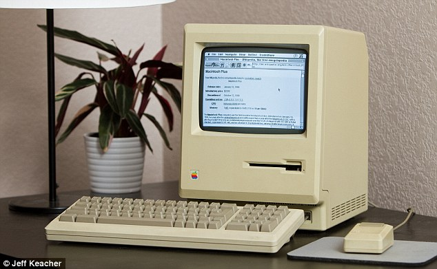
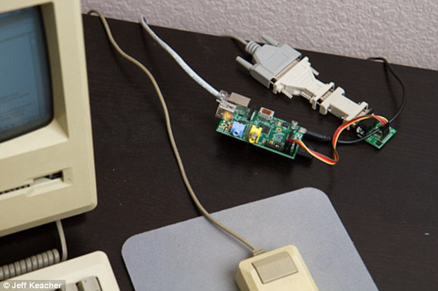
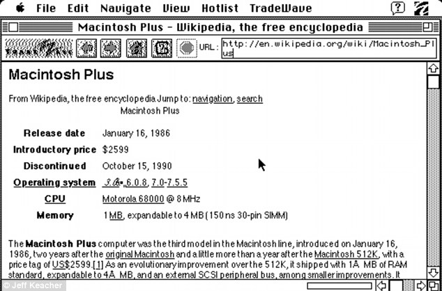

Most of us have old tech gadgets lying around gathering dust, but one engineer has decided to put his to good use. Jeff Keacher from Colorado successfully managed to wire up a 27-year-old Mac Plus - an early version of the Apple Mac computer - to the web using a Raspberry Pi and proxy server.This is particularly impressive because the computer was built in 1986 - five years before the first web servers were switched on and the world wide web officially launched - and it is said to be '200,000 times slower' than modern-day desktop PCs.
 Engineer Jeff Keacher from Colorado used an early web browser called MacWeb 2.0 to run basic versions of Wikipedia and Hacker News on his 1986 Mac Plus, pictured. Pages took 'minutes' to load, but Keacher was able to access the sites through a proxy serverThe full process of how Keacher managed to connect his now antique hardware is available on his blog. He began by installing a version of MacWeb 2.0 - an early version of the Mac web browser that runs on the Mac System 7 operating system. To connect the computer to the router, without an Ethernet port, Keacher used a series of old adapters to to connect a Raspberry Pi to the Mac Plus. He then connected the Pi to the router.
 To connect to his home network, Keacher had to wire up his computer to a Raspberry Pi, pictured, and then connect the Pi to his router. This was necessary because the Mac Plus is so old it doesn't have an Ethernet port, so couldn't connect to the router directlyMacWeb 2.0 is not capable of reading web addresses and serving links and pages in the same way as modern-day browsers because it doesn’t recognise computer languages such as Javascript or CSS. Instead, Keacher recruited a friend to write a proxy program that took the URL of websites, removed all modern-day computer language, cookies and images and turned the sites into basic text versions. Keacher was then able to read Wikipedia pages and access Hacker News through the retro browser. On his blog, Keacher explained: ‘Yes, in a certain sense, my Mac has already been on the internet through dial-up shell sessions.
 A Wikipedia page viewed through the MacWeb 2.0 browser. MacWeb 2.0 isn't capable of reading web pages because it doesn't recognise computer languages such as Javascript of CSS. Instead, Keacher used a program that stripped the sites of this computer language and turned them into basic text versions‘What it never did was run a TCP/IP stack of its own. It was always just a dumb terminal on the ‘net, never a full-fledged member.’ ‘Sure, it was slow as hell, but it worked! Data loaded, pages rendered, and links were clickable. Even forms sort of worked.’ Keacher has a Master of Science Degree in Management Science and Engineering from Stanford University. he also holds a Bachelor of Science degree in Electrical Engineering from Rose-Hulman Institute of Technology.
hideThe change in Apple’s security marketing message on Mac website has been the issue of debate in tech circles all around the world. The previously set “A Mac isn’t susceptible to the thousands of viruses plaguing Windows-based computers…” message under “Why you’ll love a Mac” on the Mac Webpage has been changed now to “built-in defenses in OS X keep you safe from unknowingly downloading malicious software on your MAC.” This change clearly signifies that the company’s trend in terms of security has been changing especially since the Flashback fiasco. There are several other indications from Apple that Mac security will continue to ripen, which is also the need of the time.
This change in terminology from Apple has sprung from the aftermath of the Flashback Trojan attack, which infected some 600000 machines. While the question, as to why is this a recent phenomenon, has been beaten to death. A more pertaining issue for Apple is the ingress of many stronger attacks in lieu of which the company has been strengthening its foothold like by launching OS X and Safari updates that disable old versions of Flash and restrict the way Java plug-ins launch. These were potential routes for attackers to penetrate through previously but Apple is minimizing risk by paying attention to all security details.
Another addition has been made to the upcoming OS X Mountain Lion as the “Gate Keeper” feature that is meant to ensure keeping your Mac malware free. Apple is also limiting the actions that a program can perform on the PC by requiring developers to sandbox applications. This conjoined by Gate keeper, will ensure that the areas susceptible to attack are minimized. Gate Keeper will also allow for restricting application usage based on the origin of that application, for example, users will be able to set OS X to allow only those applications that are obtained through a trusted source or Mac App Store. Even the users who choose to allow apps from all sources will be prompted to allow the app before it could access personal information like contacts, calendar, etc.
Secure, Safe and selling itTraditionally, Apple has held back from dispatching any security information and while the trend is not about to change completely, at least the patching will be much more refined in the future. OS X Mountain Lion Security Update test 1.0 consists of daily checks for security updates and also the function to install these updates automatically and upon shutdown. These updates will aid Apple in identifying and dealing with threats easily.
Apple is continuing on adding some security features as standard in its OS like the prior FileVault that used to encrypt only a home folder as compared to the new File Vault 2, which would allow full-disk encryption.
Apple is known for being user/consumer-oriented and for its general hostility towards any threats. However, the recent security setbacks have shown the people how these threats have made god bleed. Now if such attacks were to continue then eventually people will start losing their faith and trust. Apple will however, strive harder than ever to maintain its position at the center of its consumer base and signs are showing that they will have their foothold stronger than ever in no time.
hide